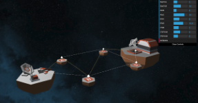

Overview
Hi! I'm Ishmael, but you can call me Ish.
I'm a software engineer at Apple working on the Apple Pay and Wallet team, and I graduated from Boston University in May 2020 with a BA in computer science. I like people, places, and things.
Here's a quick summary of my CV:
// It's wrong to treat people as objects, so I make sure to treat myself with class
public class Ish {
public String name = "Ishmael Perez";
private class Education {
String school = "Boston University";
String degree = "B.A. in Computer Science";
String graduatedDate = "May 2020";
final float gpa = 3.1;
}
private class WorkExperience {
Job appleEngineer = new Job("Software Engineer, Apple Pay", "Apple");
appleEngineer.startDate = "September 2019";
appleEngineer.endDate = null;
appleEngineer.tasks = {
"Coding back-end services for Wallet in Java",
"The rest is top-secret!"
}
Job sparkFellow = new Job("Innovation Fellow", "BU Spark! Lab");
sparkFellow.startDate = "January 2020";
sparkFellow.endDate = "May 2020";
sparkFellow.tasks = {
"Planned and researched mental healthcare and iOS development to create
full-fledged iOS app for people with depression and bipolar disorder",
"Coded app in Swift using model-view-controller architecture"
};
Job driftInternship = new Job("Software Engineer Intern", "Drift.com");
driftInternship.startDate = "July 2019";
driftInternship.endDate = "December 2019";
driftInternship.tasks = {
"Developed prototype for Drift Video app on Android using Kotlin",
"Used XCUITest framework to write bug-catching test suites",
"Coded UI login and detail view elements in Swift and connected to existing back-end components"
};
Job siemensInternship = new Job("Technical Intern", "Siemens AG");
siemensInternship.startDate = "September 2017"
siemensInternship.endDate = "March 2019"
siemensInternship.tasks = {
"Back end Apex development for process automation and data storage",
"Front end Visualforce development for websites and forms used by Siemens teams",
"Maintenance of code quality by creating robust test classes and refactoring legacy code"
}
}
private class Links {
Link resume = new Link("https://ishfulthinking.com/files/resume.pdf");
Link linkedin = new Link("https://www.linkedin.com/in/ishfulthinking/");
Link github = new Link("https://github.com/ishfulthinking");
Email personalEmail = new Link("ishmaelkperez@gmail.com");
}
}Education
I should start off with my schooling, since I spent a lot of money for this special piece of paper with my name and major on it.
B.A. in Computer Science from Boston University
Graduated May 2020 | GPA: 3.1
- Completed coursework includes algorithm analysis, data structures, software engineering, mobile app development, computer networks, and AI
- Member of Upsilon Pi Epsilon computer science honor society and the Society of Hispanic Professional Engineers (and recipient of 2019 SHPE Chevron Scholarship)
Work Experience
I'm currently a software engineer at Apple, and I previously held a fellowship and two internships (one front-end, one back-end):
Software Engineer at Apple
September 2020 - Present | Cupertino, CA
- I work on the Apple Pay & Wallet team doing back-end development in Java.
- I signed an NDA so I can't really mention much more :-)
Spark! Innovation Lab Continuing Fellow at BU Department of Computer Science
January 2020 - May 2020 | Boston, MA
- I planned and built an iOS app called Forget-Me-Not for helping people with depression and bipolar disorder. Inspired by my own struggles with depression, the app functions as a journal and mood tracker, and I plan to add medication tracking/reminders, a self-care exercise list, and a progress report generator to send summaries to counselors and loved ones.
- I began the project after my application for the Spark! Innovation Fellowship was accepted in September 2019. I used the semester to plan and start the project by interviewing target users, examining competitors, and begin coding using storyboards, but found that coding the app was more beneficial for both my learning and the project's long-term maintenance.
- I coded the app itself in Swift and using a model-view-controller (MVC) architecture. I applied to funding opportunities including BU's BUild Lab Idea Cup (for which we won 3rd place) and New Venture Competition (for which I was a semifinalist). As a health-based app, I also met with the BU and MIT startup law clinic to guarantee my app was compliant with HIPAA.
Software Engineer Intern at Drift.com
July 2019 - December 2019 | Boston, MA
- I built the prototype for the Drift Video app on Android using Kotlin in Android Studio. While building it from scratch, I referenced the existing iOS app to guarantee existing use cases were replicated and reliably implemented. Completion of this project set the foundation for reaching countless new customers who use Android devices.
- While building the app in Android, I implemented the OkHttp and CameraX libraries to handle HTTP requests/JSON parsing and video recording respectively. I then verified HTTP request/response correctness using the Postman tool.
- Afterward, I did quality assurance and front end development by building comprehensive test suites for Drift's iOS app. I programmed these tests using the XCUITest framework in Xcode and have prevented bugs from shipping to production, which upheld Drift's high quality standards.
- I finished my internship coding front end components like the login and video detail views in Swift. I coded from scratch for some and edited other existing views to fit new UI designs. All components were coded using the MVC architecture and the RxSwift library.
Technical Intern at Siemens AG
September 2017 - March 2019 | Orlando, FL
- I coded back-end triggers and classes to automate data processing in the company’s Salesforce environment, which has saved countless hours and overhead costs by automating processes that were previously performed by hand (e.g. data entry and invalid data removal in the wind energy division) using the Java-like Apex and SQL-like SOQL languages.
- When Siemens teams needed maintenance requests, their forms would sometimes pass invalid data into the back end. To rectify this, I created and refactored forms using the HTML-like Visualforce language and modified the existing back end code to filter invalid data and work more efficiently.
Community
I also do things outside of school and work, I promise! Here are some of the things I do as extracurriculars:
Out in Tech Member and Mentor
January 2020 - Present | Boston, MA / Remote
- I've attended several trainings and panels about creating a more inclusive workspace, and have also participated in volunteer events to develop technological resources for ally organizations.
- Participated in July 2020 Digital Corps website development sprint, designing and building a website for a nonprofit ally organization by using built-in Wordpress tools alongside custom HTML and CSS elements.
- Currently serve as a mentor for a junior computer science student as part of OiT's 8-week Digital Mentorship series. In this role, I meet with the student weekly to help them complete a project and develop technical skills.
Wallbreakers Trainee Mentor
October 2019 - March 2020 | Remote
- I completed the Wallbreakers training program from April to June 2019 and loved it! During my time as a trainee, I shared my answers to help other students debug their code and created a guide to problem submission via Git for newbies.
- Having been a previous trainee at Wallbreakers and at Facebook Cambridge's Above & Beyond Computer Science program, I know how helpful these trainings can be and wanted to give back by helping teach the incoming Wallbreakers class. I held weekly online office hours where I guided students through Leetcode problems to strengthen their grasps on algorithm analysis and data structures, both of which related directly to their future careers in software engineering.
- I did resume reviews upon request, especially before students were referred to companies by the program coordinators. I also conducted mock interviews with these students to strengthen both their technical and soft skills.
Co-Founder and Membership Coordinator for QLatinx
July 2016 - October 2018
OK, this one isn't CS-related, but it's something I'm very proud of!
- After the Pulse Nightclub tragedy in June of 2016, I met with community members to develop ways to support the Latinx and LGBTQ communities. We built this nonprofit together and met weekly to hold workshops, health fairs, and develop activism/advocacy skills in our membership. Since then, it's grown large and has been recognized nationally!
- I created and developed the Community Cocina cooking class series in which I worked with a local chef to cook Latin American countries' signature dishes and teach the community about Latinx culture. The program was accessible to all and grew to be our most popular program, serving hundreds of people over its lifetime. It ran monthly and still runs to this day!
Projects
My GitHub account has multiple projects I've worked on, whether that's for fun, a school assignment, or simply to practice a new skill.
You can also find a full list of my personal passion projects here.

Creating a Website with Bootstrap Guide |

Fitbit Ionic Clock Faces - Fit & Bit |

Python Hand Recognition Guide |

Dijkstra's Algorithm three.js Visualization |
Music
I play piano and cover pop, video game, and indie rock songs. I typically arrange by ear and challenge myself to play more technically with each cover.
My YouTube channel has videos of my piano covers. Check out these examples of my work!
|
NASA by Ariana Grande |
Subterranean Homesick Alien by Radiohead |
Art
I love illustration and have done some myself. I also really like to draw on my TI-83 calculator, whether that's portraits or typical pixel art.
My art can be found on my Tumblr blog.

TI-83 Me and My Friends |

Dolores Huerta Illustration |

TI-83 Evangelion Unit 1 |
Contact
I'm flattered that you want to speak with me! Feel free to connect and chat with me through any of the following ways, whether that's to suggest something, offer some praise, or complain. I appreciate all feedback 👍🏽
- Email: ishmaelkperez@gmail.com
- LinkedIn: https://www.linkedin.com/in/ishfulthinking/
- Github: https://github.com/ishfulthinking